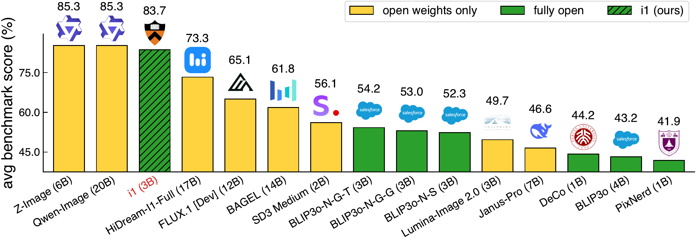
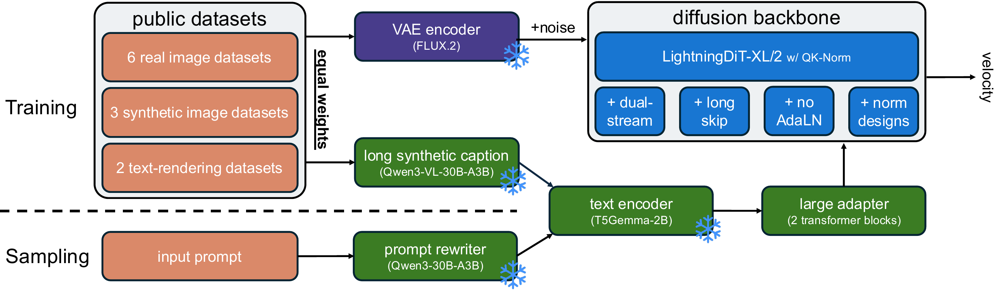
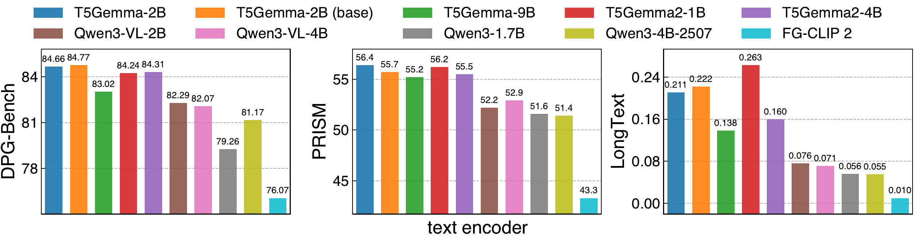
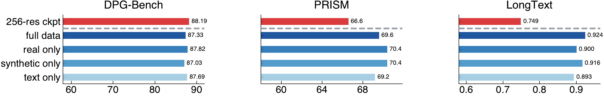
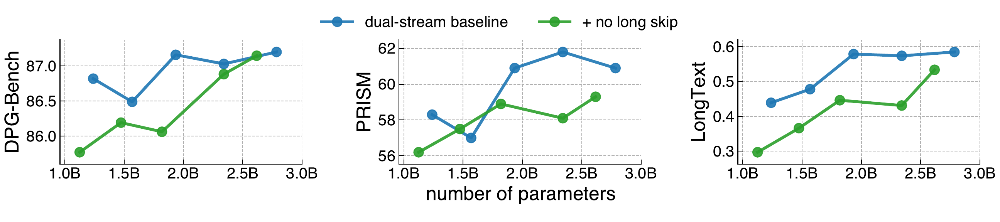
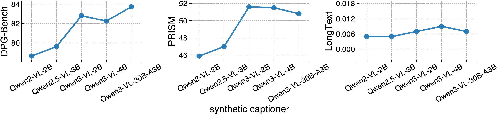

i1：一份「完全开源」的强文生图配方

ℹ️ 这是一篇「实证调查 + 配方」型论文，不是「新方法」论文。 它的贡献不在某个新公式，而在 300+ 个单变量控制实验把文生图扩散模型的设计选择逐个消融、给出 10 条 finding，并据此训出一个完全开源（weights + data + code + recipe）的 3B 模型 i1。本文按精读 5 段骨架展开，把每条结论尽量落到论文图表与仓库代码（JAX 实现）的具体行号上。
1. 出发点 (Motivation)
过去几年，文生图（text-to-image, T2I）扩散模型一路狂飙，但很难把进步归因到具体的建模/数据选择上。论文开篇点出两个病根[§1]：
- 领先模型不公开训练数据与完整配方。即使放出权重（FLUX.1、HiDream、Qwen-Image…），训练数据来源、规模、混合比例几乎都是黑箱，导致无法做受控分析和可靠的后续工作。
- 领先模型很少给出彻底的消融。一个 recipe 往往把架构、训练、数据上几十个决策捆绑在一起发布，没法把某个提升归因到某个具体因子。结果是：到今天，连「用单个文本编码器还是多个文本编码器」这种基础问题，社区都没有共识。
而完全开源（weights + data + code）的模型虽然存在（BLIP3o、PixNerd、DeCo…），却显著弱于领先模型——此前最强的完全开源模型在五个 benchmark 上比 i1 平均低 29.5 个百分点[§Abstract]。
i1 的立场因此是：社区需要把强模型当成「可检视的科学对象」，而不是不透明的端点。做法是——
- 从一个强 baseline 出发（基于 LightningDiT），每次只改一个设计选择（modifications are not accumulated across experiments），在 256 分辨率预训练阶段做受控实验；
- 把所有「确实有用」的设计在最后组合成 i1；
- 把模型、代码、数据配方、消融全部开源。

一句话动机：与其再发一个调好的黑箱，不如把设计空间一个个钉死，并把整套东西开源，让后续研究能站在一个可复现、可归因的强 baseline 上。
2. 方法 (Method)
i1 的「方法」= 一个标准的 flow-matching 扩散 transformer + 一组被实验筛选出来的设计选择。下面按「训练目标 → 骨干 → 文本/噪声条件 → 数据」拆开，每块都给数学 + 代码。
2.1 训练目标：rectified flow（velocity 预测）
i1 用 flow matching / rectified flow 训练。核心思想：在噪声 \(x_0\sim\mathcal N(0,I)\) 和真实图（的 VAE latent）\(x_1\) 之间走一条直线，让网络去预测这条直线的「速度」。
定义时间 \(t\in[0,1]\)，插值点与目标速度为：
—— 翻译：$x_t$ 是「噪声到真图」直线上的一个中间点（$t$ 越大越接近真图）；目标速度 $u_t$ 就是这条直线的方向（终点减起点），是个**常向量**，与 $t$ 无关。网络的任务就是：看到带噪的 $x_t$ 和时间 $t$，猜出这个 $u_t$。
训练损失就是预测速度 \(v_\theta\) 与目标速度的均方误差：
—— 翻译：$c$ 是文本条件。损失逼网络在每个噪声水平上都指对方向；采样时只要从纯噪声出发，沿网络给出的速度一步步积分（Euler）到 $t=1$，就得到一张图。
时间 \(t\) 不是均匀采样，而是 logit-normal（对 sigmoid 取正态），让训练更关注中间噪声水平。代码把上面三件事（采 \(t\)、造 \(x_t\)、算 \(u_t\)）写得和公式一一对应：
repo/jax/diffusion/rectified_flow.py:L33-L70 — 采样 logit-normal 时间 + 构造 flow matching 训练输入
def sample_times(rng, batch_size, cfg, dtype=jnp.float32):
if cfg.use_lognorm:
rng, normal_key = jax.random.split(rng)
normal_samples = cfg.lognorm_mu + cfg.lognorm_sigma * jax.random.normal(
normal_key, (batch_size,), dtype=dtype)
t = jax.nn.sigmoid(normal_samples) # logit-normal: sigmoid(N(mu,sigma))
else:
t = jax.random.uniform(uniform_key, (batch_size,), dtype=dtype)
...
return t
def prepare_rectified_flow_inputs(latents, noise_key, time_key, cfg):
x1 = latents
x0 = jax.random.normal(noise_key, latents.shape, dtype=latents.dtype) # 噪声
t = sample_times(time_key, latents.shape[0], cfg, dtype=latents.dtype)
t_expanded = _broadcast_t(t, latents.shape)
xt = (1.0 - t_expanded) * x0 + t_expanded * x1 # x_t = (1-t)x0 + t x1
ut = x1 - x0 # u_t = x1 - x0
return xt, ut, t.astype(latents.dtype)
训练循环里就是一行 velocity-MSE：
repo/jax/training/main.py:L567-L638 — 调用上面构造输入、前向、算 velocity MSE 损失
xt, ut, t = rectified_flow.prepare_rectified_flow_inputs(
latents, rng_noise_local, rng_timestep_local, rectified_flow_cfg)
model_latents, timesteps, target = xt, t, ut
...
model_output = _dit_forward(params, model_latents_mp, timesteps_mp,
encoder_hidden_states_mp, mask_mp, rng_dp, rng_dt)
...
velocity_pred = _to_velocity(model_output_f32, model_latents_f32, timesteps_f32)
loss_mse = jnp.mean((velocity_pred - velocity_target) ** 2) # 就是 ||v - u||^2
直觉版：把「去噪」想成在一团雾（噪声）和一张清晰照片之间拉一条直线。网络站在直线上某点，被要求指出「往清晰那头走的方向」。训练就是反复纠正它指的方向；生图就是从雾出发顺着它指的方向走到底。
2.2 骨干：双流 MMDiT + 长跳连接（long skip）
双流（dual-stream）MMDiT 指：图像 token 和文本 token 拼成一个长序列做联合注意力，但两条「流」用各自独立的 QKV/输出投影和 MLP 权重（图像一套、文本一套）。这与单流（共享权重）、cross-attention（文本只通过 cross-attn 注入）相对。论文实验（Fig. 12）显示双流在「性能/参数」权衡上最好（Finding 5）。
代码里这点非常直白——注意力模块为两条流各开一套 qkv/proj：
repo/jax/models/dual_stream_backbone.py:L105-L118 — 双流：图像/文本各一套 QKV 与输出投影
self.qkv_image = nn.Dense(3 * self.hidden_size, use_bias=True, name="qkv_image")
self.qkv_text = nn.Dense(3 * self.hidden_size, use_bias=True, name="qkv_text")
...
self.out_image = nn.Dense(self.hidden_size, use_bias=True, name="proj_image")
self.out_text = nn.Dense(self.hidden_size, use_bias=True, name="proj_text")
注意力本身仍是全序列联合：把图像/文本的 Q、K、V 沿序列维拼起来一起算 softmax，让图文充分交互：
repo/jax/models/dual_stream_backbone.py:L161-L176 — 拼接图文 QKV 做联合注意力
q = jnp.concatenate([q_image, q_text], axis=2)
k = jnp.concatenate([k_image, k_text], axis=2)
v = jnp.concatenate([v_image, v_text], axis=2)
attn_logits = jnp.einsum("bhqd,bhkd->bhqk", q * self.scale, k).astype(jnp.float32)
...
attn = nn.softmax(attn_logits, axis=-1).astype(q.dtype)
out = jnp.einsum("bhqk,bhkd->bhqd", attn, v)
长跳连接（long skip） 来自 U-ViT：把前半段 block 的输出缓存起来，后半段对称地把它们拼回来（concat 后过一个线性层降维）。这是个老设计，但现代 T2I 很少用；论文 Fig. 11 显示它能稳定改善「性能/参数」权衡（Finding 4）。实现是 U 形的 in/mid/out 三段：
repo/jax/models/dual_stream_backbone.py:L604-L640 — long skip 的 U 形执行：in_blocks 压栈、out_blocks 出栈
if cfg.use_long_skip:
skips = []
for block in self.in_blocks: # 前半段：每层输出压栈
image_tokens, text_tokens = block(image_tokens, text_tokens, cond, ...)
skips.append((image_tokens, text_tokens))
image_tokens, text_tokens = self.mid_block(image_tokens, text_tokens, cond, ...)
for block in self.out_blocks: # 后半段：弹栈，作为 skip 拼回
image_tokens, text_tokens = block(image_tokens, text_tokens, cond, ...,
skips.pop())
而 out_blocks 里的拼接 + 降维（skip_linear 把 concat([x, skip]) 投回 hidden_size）：
repo/jax/models/dual_stream_backbone.py:L227-L243 — skip 拼接后用线性层降回原维度
skip_image, skip_text = skip
skip_linear_image = nn.Dense(self.hidden_size, ...) # concat -> hidden_size
skip_linear_text = nn.Dense(self.hidden_size, ...)
image_tokens = skip_linear_image(jnp.concatenate([image_tokens, skip_image], axis=-1))
text_tokens = skip_linear_text(jnp.concatenate([text_tokens, skip_text], axis=-1))

2.3 文本/噪声条件：单编码器 + 大 adapter，砍掉 AdaLN
这是 i1 最有意思的两条发现。
(a) 用「单个强编码器 + 更大 adapter」替代「多文本编码器」（Finding 2）。 很多模型（SD3、HiDream）拼接多个文本编码器（CLIP+T5+LLM）的特征。i1 做了一个关键消融（Table 3）：把 同一个 T5Gemma-2B 的特征复制两份——用两个独立 adapter 时 LongText 0.211→0.309 明显涨，用共享 adapter 时几乎不动。这说明「多编码器」的增益主要来自多出来的 adapter 参数，而非不同编码器的多样特征。于是 i1 干脆用单编码器配一个更大的 transformer adapter（从 2.6M 参数的 MLP 换成 17.2M 参数/block 的 transformer），用极小的参数代价、且不增加文本序列长度（省显存/算力）就拿到同等增益。
adapter 是个标准的小 transformer（attention + MLP + 残差），还顺手做了整条 caption 级别的 dropout 给 CFG 用：
repo/jax/models/components.py:L188-L211 — 大 transformer adapter 的一个 block（投影→若干层 attn+MLP 残差）
def _apply_connector(x, suffix):
x = nn.Dense(self.hidden_size, **inits, name=f"connector_in{suffix}")(x) # 投到骨干维度
for block_idx in range(self.num_blocks): # i1 用 2 个 block
norm1 = norm_cls(self.hidden_size, ...); norm2 = norm_cls(self.hidden_size, ...)
attn = base.Attention(self.hidden_size, self.num_heads, ...)
mlp = base.SwiGLUFFN(self.hidden_size, int(2/3*mlp_hidden), ...)
attn_out = attn(norm1(x), None, not train)
x = x + attn_out # 残差
x = x + mlp(norm2(x)) # 残差
return x
(b) 砍掉 AdaLN（Finding 3）。 AdaLN（Adaptive LayerNorm）是 DiT 的标配：从「时间步嵌入 + pooled 文本嵌入」线性投影出每层的 scale/shift/gate。它参数巨大（在 cross-attn baseline 上占 0.89B→0.66B 中的 0.23B）。论文发现：在用了大 adapter 后，完全去掉 AdaLN 几乎不掉点（Table 4），于是 i1 直接不用 AdaLN——更省参数。代码里这是一个 use_adaln=False 的分支，block 退化成纯 pre-norm transformer（norm→attn→残差→norm→MLP→残差），不再有 timestep/pooled-text 调制：
repo/jax/models/dual_stream_backbone.py:L272-L289 — use_adaln=False 时 block 退化为标准残差，无任何 timestep 调制
if not self.use_adaln:
image_attn, text_attn = attn(norm1_image(image_tokens), norm1_text(text_tokens), ...)
image_tokens = image_tokens + (norm3(image_attn) if norm3 is not None else image_attn)
text_tokens = text_tokens + (norm3(text_attn) if norm3 is not None else text_attn)
image_mlp_out = mlp_image(norm2_image(image_tokens))
text_mlp_out = mlp_text(norm2_text(text_tokens))
image_tokens = image_tokens + (norm4(image_mlp_out) if norm4 is not None else image_mlp_out)
text_tokens = text_tokens + (norm4(text_mlp_out) if norm4 is not None else text_mlp_out)
return image_tokens, text_tokens
⚠️ 代码 vs 论文的一个细节：虽然 AdaLN 被砍，timestep 信息并没有完全消失——
_dit_forward里仍把t_embedder(t)加到 pooled 文本嵌入上得到cond（cond = t_emb + pooled，见dual_stream_backbone.py:L588）。只是当use_adaln=False时，这个cond在 block 内部不被使用（上面分支根本没引用cond）。也就是说 i1 是真正的 noise-unconditional block——与论文「removing noise conditioning only minimally affects performance for flow matching」的引用（Sun et al. 2025）一致。


2.4 数据：长 caption + 推理扩写、等权重混合
(a) 训长 caption、推理扩写短 prompt（Finding 7）。 只用长合成 caption 训练 → 在长 prompt（DPG/LongText）上强，但在短 prompt（GenEval）上崩（GenEval 0.17）。原因是训练/推理的 prompt 长度分布不匹配。解法不是去训短 caption，而是推理时用 LLM（Qwen3-4B）把短 prompt 扩写成长段落，对齐训练分布——GenEval 直接回到 0.73（Table 5）。扩写用的 meta-prompt 很朴素：
"I have a short text-to-image prompt {prompt}. Please expand it into a descriptive paragraph, while making sure the generated image still clearly includes all the items mentioned in the original prompt. ..."
训练 caption 则统一用 Qwen3-VL-30B-A3B 生成，prompt 就是「Describe the image in detail using one paragraph.」：
repo/jax/data_processing/synthetic_captioning/caption.py:L141 — 长合成 caption 的生成 prompt
return img, stem, "Describe the image in detail using one paragraph."
这条 finding 反直觉但很实用：训练分布 > 迎合测试分布。与其为短 prompt 训一个弱模型，不如训一个强的长 prompt 模型，再在推理侧把短 prompt「拉长」去够它。
(b) 各数据集等权重（Finding 8）。 原始语料严重不均衡（YFCC 占 168M 里的 98M），naive 混合等于给少数大数据集巨大权重。i1 借鉴 VLM 训练里「给每个来源的数据量设上限」的做法，对每个数据集的采样权重设阈值；实验（Fig. 9 / threshold 图）发现阈值取到让所有数据集等权重（counting repetitions，即按「采样次数」而非「唯一图像数」算）时整体最好。配置里就是所有数据集权重都填 1：
repo/jax/configs/i1_training/256_resolution.py:L58-L73 — 11 个数据集权重全部为 1（等权重）
path_and_count = [
('gs://path/to/yfcc/tfrecord', 1),
('gs://path/to/imagenet22k/tfrecord', 1),
('gs://path/to/rendered_text/tfrecord', 1),
('gs://path/to/fluxreason/tfrecord', 1),
('gs://path/to/textatlas/tfrecord', 1),
('gs://path/to/pexels/tfrecord', 1),
... # 共 11 个，全 1
]
sum_count = sum([item[1] for item in path_and_count])
path_and_count = [(item[0], float(item[1])/float(sum_count)) for item in path_and_count]
整份 i1 配方在 256 配置的 model_kwargs 里一目了然——长跳、transformer adapter（2 block）、不要 AdaLN、sinusoidal+RoPE、sandwich norm：
repo/jax/configs/i1_training/256_resolution.py:L22-L37 — i1 最终建模配方（每个 flag 对应一条 finding）
config.model_kwargs = mlc.ConfigDict(dict(
use_long_skip=True, # Finding 4
text_encoder_adapter_type="transformer", # Finding 2
text_encoder_adapter_num_blocks=2, # Finding 2（2 个 block 即可）
use_adaln=False, # Finding 3（砍掉 AdaLN）
position_embedding="sinusoidal_and_rope", # 附录 C.1 消融
use_sandwich_norm=True,
repeat_text_emb=False,
))
config.backbone = "dual_stream" # Finding 5
config.text_encoder_type = "T5Gemma" # Finding 1
3. 实验结果 (Results)
3.1 主结果：五个 benchmark 上压过更大的开源模型
最终 i1-3B 在 1024 分辨率评测（Table 8），与领先系统对比的硬数字：
| 模型 | 参数 | GenEval | DPG | PRISM | CVTG-2K | LongText |
|---|---|---|---|---|---|---|
| i1（ours） | 3B | 0.84 | 86.73 | 70.1 | 0.8531 | 0.922 |
| FLUX.1 [Dev]（仅权重） | 12B | 0.66 | 83.84 | 65.1 | 0.4965 | 0.607 |
| HiDream-I1-Full（仅权重） | 17B | 0.83 | 85.89 | 66.1 | 0.7738 | 0.543 |
| Lumina-Image 2.0（仅权重） | 3B | 0.73 | 87.20 | 63.5 | 0.1577 | 0.088 |
| BLIP3o-N-G-T（完全开源，此前最强） | 3B | 0.86 | 79.77 | 56.8 | 0.3330 | 0.153 |
| Qwen-Image（仅权重，参照天花板） | 20B | 0.87 | 88.32 | 73.9 | 0.8288 | 0.943 |
要点：
- vs 完全开源同类：i1 在 DPG/PRISM/CVTG-2K/LongText 上全面碾压 BLIP3o 系，平均 +29.5 个百分点[§Abstract]。文字渲染类指标差距尤其夸张（LongText 0.922 vs 0.153；CVTG-2K 0.853 vs 0.333）。
- vs 更大的「仅权重」模型：3B 的 i1 在多数指标上压过 12B FLUX.1 [Dev]、17B HiDream-I1、3B Lumina-Image 2.0。
- 逼近天花板：在 CVTG-2K/LongText 上甚至和 20B Qwen-Image 同档。
- GenEval 例外：i1 = 0.84，作者明确说 GenEval 可能与人类判断不一致，且社区常用 BLIP3o-60K 微调来「刷」GenEval，因此只报告它「图个完整」，不作为能力的可靠信号[§6.3]。

3.2 受控实验里的 10 条 finding（论文真正的「结果」）
论文的核心产出是 10 条可复用结论：
- 编码器-解码器（T5Gemma）和解码器型 LLM/VLM 都能当好文本编码器；i1 选 T5Gemma-2B。
- 「多文本编码器」的增益可由「单编码器 + 更大 adapter」等价获得，且更省显存/算力。
- AdaLN（对 pooled 文本/timestep 的调制）收益边际，可整块砍掉。
- 长跳连接改善「性能/参数」权衡。
- 双流骨干在三类骨干里「性能/参数」最优。
- 合成 captioner 的选择对下游影响很大。
- 训长 caption > 训短 caption；短 prompt 的劣势靠推理扩写补回。
- 等权重混合数据集是简单又强的默认。
- 数据多样时，重复训练数据只带来边际下降（4.4M 唯一图像 ≈ 88.1M，见 Table 7）——少图多 epoch 也行。
- 强高清生成不需要高清数据覆盖到低清预训练的全部广度（只用 real 或只用 synthetic 在 512 训练，LongText 增益与全量相当）。




3.3 训练规模
- 算力：300+ 控制实验，合计 700K+ TPU v6e 小时[§Abstract]。
- 三阶段渐进式分辨率：256（2M 步）→ 512（0.5M 步）→ 1024（0.3M 步）；batch 512，lr 1e-4，AdamW(b1=0.9,b2=0.95)，EMA 0.9999。
- 512 分辨率训练把 LongText 从 0.75 拉到 0.92[§6.2]。
4. 实现细节 (Implementation)
交叉阅读 JAX 仓库后值得记下的实现细节（均带行号）：
- velocity MSE 在 float32 里算以稳数值，即使前向用 bf16：
model_output_f32 = model_output.astype(jnp.float32)后再算 loss（repo/jax/training/main.py:L627-L637）。 - i1-3B 的实际尺寸是
DiT-XL_2016：hidden=2016、depth=29、heads=28、patch=2（repo/jax/models/dual_stream_backbone.py:L687+configs/i1_training/256_resolution.py:L18-L21）。注意命名仍叫 "XL" 但宽度被加到 2016 才凑到 3B。 - long skip 的 U 形是按 depth 对半切：
num_in_blocks = depth // 2，in/mid/out 三段；out_block 用use_skip=True触发skip_linear（dual_stream_backbone.py:L453-L505）。depth=29 是奇数，正好 14 in + 1 mid + 14 out。 - 位置编码是「双保险」：同时用可学习的 sinusoidal
pos_embed（加到 patch token 上）和 Multimodal-RoPE（作用在 Q/K 上）。position_embedding="sinusoidal_and_rope"两者都建（dual_stream_backbone.py:L419-L448, L536-L546）。 - 高清微调靠 RoPE 索引插值 + sinusoidal 插值，而非重训：
image_resolution != 256时走_get_interpolated_pos_embed，且 RoPE 的image_scale = 256.0 / cfg.image_resolution缩放空间轴（dual_stream_backbone.py:L371-L382, L441-L442）。 - pooled 文本嵌入是 mask 加权平均（不是简单 mean），再与 timestep 嵌入相加成
cond：pooled = einsum("bth,bt->bh", caption_emb, weights)/denom; cond = t_emb + pooled（dual_stream_backbone.py:L581-L588）。在use_adaln=False时这个cond不参与 block 计算（见 §2.3 的代码-论文差异）。 - CFG 用「区间 CFG + Rescale CFG」组合：先按
cfg_interval_start决定哪些 \(t\) 施加 guidance，再做 Lin et al. 2024 的方差 rescale（guided = cond + mask*(scale-1)*(cond-uncond)，随后按std_c/std_g重缩放），推理 CFG scale=12、rescale 强度=1（repo/jax/diffusion/inference_pipeline.py:L290-L308）。 - 采样器是 Euler + 常步长，时间网格按
inference_timestep_shift做 shift（把更多步花在高噪声段），对应 diffrax 的dfx.Euler()（inference_pipeline.py:L245-L259）。 - CFG dropout 在 adapter 里做：训练时按
drop_text_prob把整条 caption 换成可学习的learnable_null_caption（components.py:L253-L267）——空条件不是全 0，而是学出来的。 - **多文本编码器是「序列维拼接 + 各自 adapter」**而非 embedding 维拼接，避免 pad 到统一长度（
components.py:L213-L251，i1 最终未用多编码器，但代码保留）。
论文 vs 代码：未发现实质性矛盾。 仓库的 256_resolution.py 配方与论文 §6/Fig. 21 的描述逐项一致（双流、long skip、no-AdaLN、transformer adapter×2、T5Gemma-2B、等权重）。唯一需要澄清的是 §2.3 提到的 cond：代码无条件构造它，但在 i1 的 use_adaln=False 路径下不消费——属于「为支持消融而保留的死代码路径」，不影响结论。另外配置里的数据路径是占位 gs://path/to/...（需自填），数据本身在 HuggingFace 开源。
5. 批判性总结 (Critical Summary)
真正的贡献：i1 不是「又一个更强的模型」，而是一份带 700K TPU 小时背书的、可复现的设计空间地图。它把社区里若干含糊的「常识」做了硬消融并钉死了答案（多编码器其实是 adapter 在起作用、AdaLN 可砍、长跳值得用、等权重是强默认、训长 caption + 推理扩写）。对开源社区，这比一个黑箱 SOTA 更有长期价值——它把「完全开源」阵营的天花板一次性抬高了 ~30 个点。
值得警惕的弱点（部分作者自己承认）：
- 评测几乎全是自动 benchmark，缺人类偏好。作者坦言 i1 在整体视觉质量上仍明显逊于 Qwen-Image 这类领先模型（附录有 failure case）。而它领先最多的恰恰是 CVTG-2K/LongText 这类文字渲染指标——这类指标对「训练数据里塞了多少文字渲染图」高度敏感，部分领先可能是数据配比红利，而非建模优越性。换句话说，「平均 +29.5 点」里文字渲染贡献了很大一块，看 DPG（通用跟随）差距其实没那么悬殊。
- 所有结论都在 ≤3B 规模上得出。作者明确说不知道这些 finding 在更大规模是否成立。尤其「AdaLN 可砍」「等权重最好」「重复数据没事」这几条，很可能是容量/数据规模受限下的现象，scale 上去后未必继续成立。
- GenEval 被边缘化处理得略方便。i1 的 GenEval（0.84）并不比对手突出，论文用「GenEval 不可靠 + 别人靠 BLIP3o-60K 刷分」来淡化它。这个论证本身有道理，但也恰好回避了 i1 在这个老牌组合性 benchmark 上不占优的事实。
- 设计空间只扫了一个子集。multi-aspect-ratio 训练、数据过滤、LLM 与 DiT 的深度融合（text encoding）、RL 对齐（DPO/GRPO 这类，参见 krea-2-2026、flow-opd-2026）都被显式留作 future work。所以 i1 是「在一条固定主干上的局部最优探索」，不是全局配方。
- 「单变量、不累积」的实验范式有盲点。每次只改一个设计、在固定 baseline 上比较，干净但忽略了设计之间的交互——论文自己其实已经撞见一例：AdaLN 该不该砍，取决于 adapter 大小（小 MLP 时砍 AdaLN 涨点多，大 adapter 时几乎不动）。这说明这些 finding 之间并非正交，最终组合是否真的最优，单变量实验并不能保证。
一句话评价：把它当「文生图设计选择的实证手册 + 一个诚实的强开源 baseline」来用，价值很高；但别把那 10 条 finding 当成跨规模、跨主干都成立的物理定律——它们是「在 3B、在这条 LightningDiT 主干上、用这套数据」的局部真理。
📌 延伸阅读：同为「全栈开源/工程配方」型的 T2I 报告可对照 krea-2-2026（更偏基建与对齐流水线）、sefi-image-2026、qwen-image-2-2026；on-policy 蒸馏方向见 flow-opd-2026。
讨论 / Comments
评论托管在本仓库的 GitHub Discussions, 需 GitHub 账号。